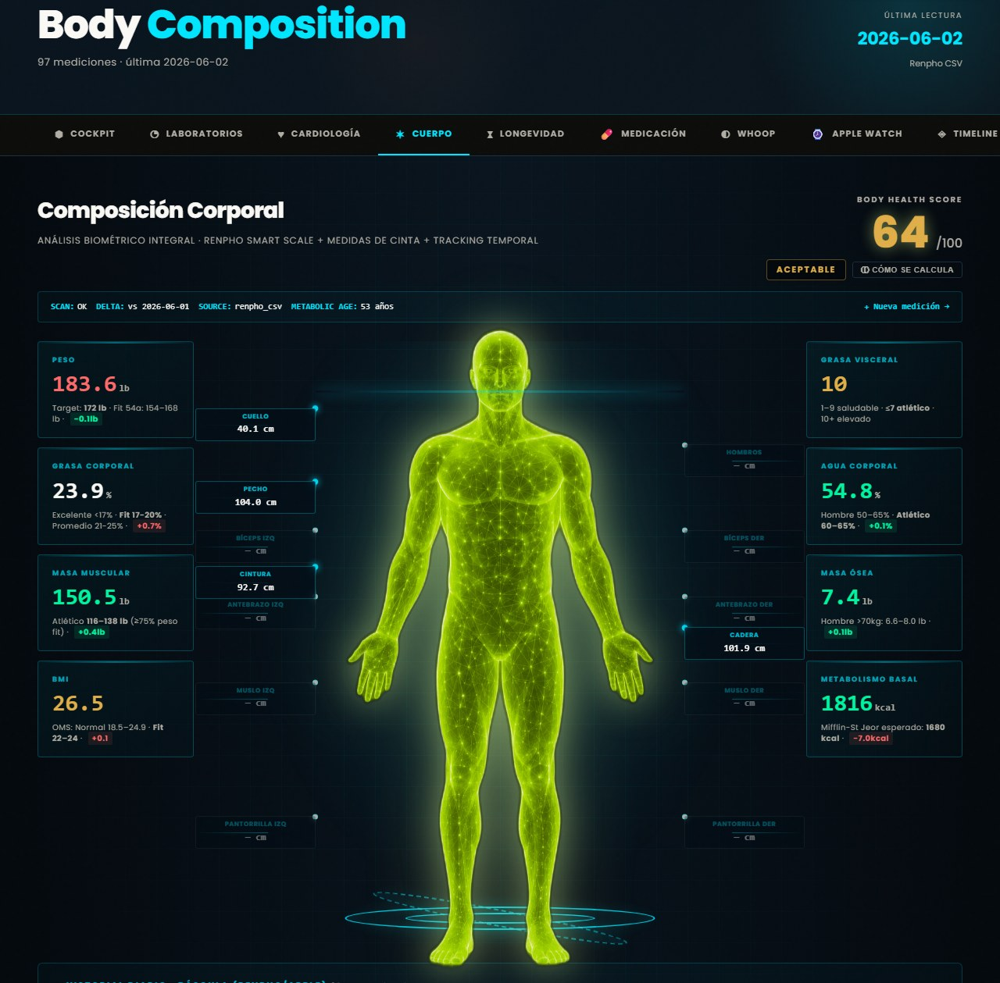
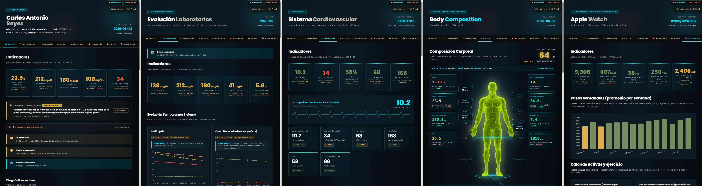
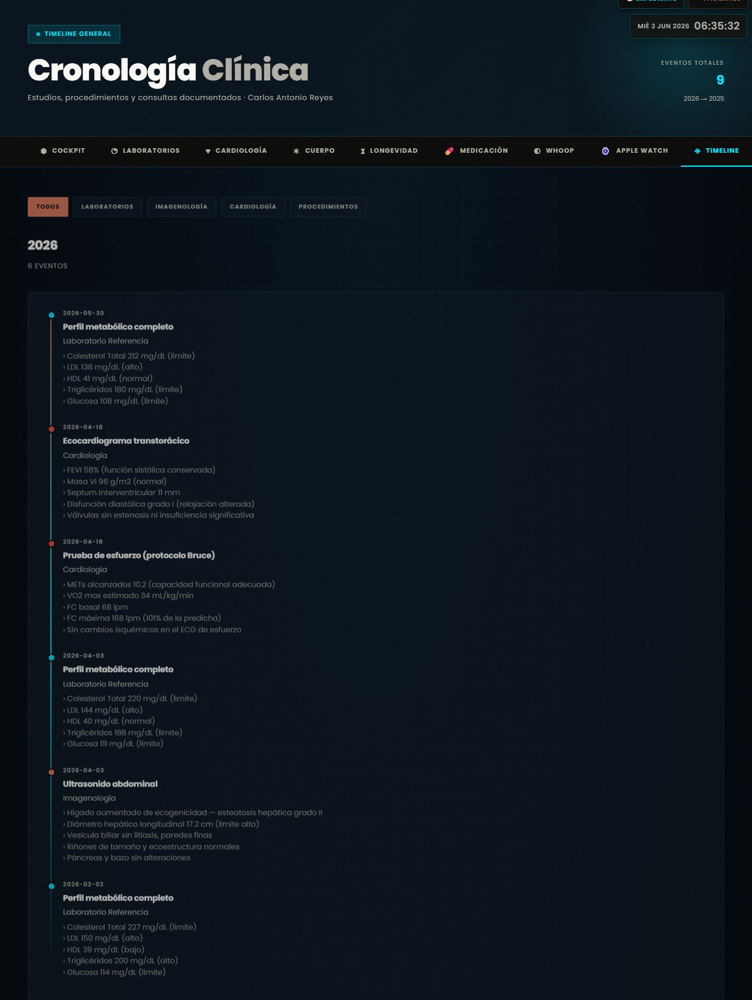
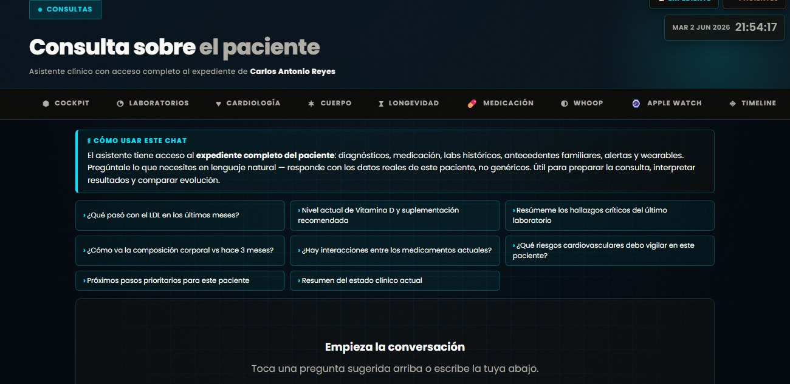

El expediente
de tus pacientes,
al fin legible.
Una plataforma local y privada que convierte los estudios de cada paciente en un tablero visual: tendencias, riesgos y resúmenes clínicos asistidos por IA. Toda la data, en una sola pantalla.
Tienes toda la data.
Pero está fragmentada.
Decenas de PDFs por paciente
Labs, imágenes, cardiología y reportes dispersos en carpetas. Encontrar un valor toma minutos que no tienes en consulta.
Las tendencias se pierden
Un LDL de 138 no dice nada solo. Verlo bajar de 170 en un año lo cambia todo — y un PDF plano no te da esa lectura.
Digerir todo cuesta tiempo
Revisar carpeta por carpeta antes de cada consulta es trabajo repetitivo que resta minutos al paciente.
El paciente no ve su progreso
Sin una visualización clara, es difícil que entienda y se comprometa con su tratamiento.
De un estudio suelto
a un tablero, en 3 pasos.
Tú subes; la IA organiza; el sistema te muestra. Sin trabajo manual de transcripción.
Subes el estudio
Foto o PDF de laboratorios, imágenes, cardiología, composición corporal o wearables. El formato que sea.
La IA extrae todo
No un resumen — cada valor, cada hallazgo, ordenado en el tiempo. Lo que un reporte plano esconde, queda visible.
Se arma el tablero
Cockpit, tendencias, riesgos y proyección — generados automáticamente. Listos para la consulta.
Todo corre local en tu Mac o PC. La información de tus pacientes nunca sale de tu consultorio — privacidad máxima por diseño.
Lo que verías con
cada paciente.
Un mismo expediente, varias lecturas. Lo que sigue es data clínica real, organizada, procesada e interpretada automáticamente por el cerebro impulsado por inteligencia artificial — para la evaluación y la toma de decisión del médico.


La plataforma en movimiento
Toca cualquier video para verlo. Así se navega y se lee la data en consulta.


Todo en una sola
plataforma clínica.
Cockpit
IncluidoResumen ejecutivo clínico del paciente con IA: estado general, lo que está bien, lo que vigilar, próximos pasos.
Cardiología
IncluidoPresión arterial, riesgo cardiovascular ASCVD, ecocardiograma y prueba de esfuerzo — con tendencias y semáforos.
Longevidad
IncluidoProyección de vida por décadas, escenarios contrastados, causas probables y VO₂ — el corazón de la conversación preventiva.
Laboratorios
IncluidoCada métrica graficada en el tiempo, con rangos óptimos y alertas de color. La evolución de un vistazo.
Composición Corporal
IncluidoFigura corporal dinámica, integración InBody/Renpho y tendencias de peso, grasa y músculo a lo largo del tiempo.
Timeline
IncluidoCronología completa del expediente: cada estudio, evento y cambio, ordenado y buscable para siempre.
Asistente de Consultas
IncluidoUn chat clínico con acceso al expediente completo del paciente. Pregúntale en lenguaje natural —“¿qué riesgos vigilar?”, “¿cómo va el control lipídico?”— y responde con los datos reales de ese paciente, no genéricos.
Integración Whoop
IncluidoRecuperación, sueño, esfuerzo (strain) y variabilidad cardíaca (HRV), sincronizados al expediente del paciente.
Integración Apple Watch
IncluidoActividad, VO₂ máx, frecuencia cardíaca y entrenamientos — la vida del paciente entre consultas.
Te aumenta.
No te reemplaza.
Ahorra tiempo
Digiere en segundos lo que tomaría revisar carpeta por carpeta. Más minutos para el paciente, menos para el papeleo.
Ves tendencias ocultas
La evolución de cada valor en el tiempo — lo que un PDF plano nunca te muestra de un vistazo.
Engancha al paciente
El muñeco corporal, la proyección de vida y los semáforos hacen que entienda — y se motive con su tratamiento.
Memoria perfecta
Cada estudio queda, ordenado y buscable, para siempre. Enfoque de medicina preventiva y de longevidad.
Una inversión,
todo incluido.
Un solo plan con todo dentro: la plataforma clínica completa, los paneles de wearables y hasta 200 pacientes. Sin bloques, sin sumas. El club entero en una inversión.
Tu club, en una plataforma.
La plataforma clínica completa para operar tu club privado de hasta 200 pacientes, con las integraciones de wearables incluidas.
- Panel de Longevidad: proyección de vida y conversación preventiva
- Cockpit, Cardiología, Laboratorios y Timeline
- Composición Corporal y Asistente de Consultas con IA
- Paneles de Whoop y Apple Watch incluidos
- Hasta 200 pacientes incluidos: tu club privado completo, sin costos por bloque
- 5 usuarios incluidos
- Soporte 24/7
- Instalación, capacitación y migración inicial incluidas
Soporte continuo, sin sorpresas
- Actualizaciones continuas del software
- Soporte remoto y capacitación continua
- Procesamiento de IA (extracción de estudios)
- Respaldos automáticos
- Corrección de errores
Claros desde el inicio
- Forma de pago: 60% al inicio / 40% a la entrega (entrega = software operativo con más de 50 pacientes cargados y funcionando)
- La data y los expedientes son propiedad del médico
- Privacidad local: la información nunca sale del consultorio
- Herramienta de apoyo a la decisión clínica
Una herramienta para pocos.
SanojaMed — Inteligencia Clínica no es un producto masivo. Se instala de forma personal en un número limitado de consultorios, con configuración a la medida y acompañamiento directo.
Coordinar la instalación